Список рядом ·19 октября2026
Продукты; Овощи и фрукты; Молочные продукты и яйца; Мясо и птица; Рыба и морепродукты; Хлеб и выпечка; Бакалея; Консервы; Замороженные продукты; Готовая еда; Сладости и снеки; Вода и напитки; Чай и кофе; Орехи и сухофрукты; Соусы и специи; Детские товары; Бытовая химия; Гигиена и косметика; Товары для дома; Посуда и кухня; Аптека; Здоровье; Зоотовары; Одежда и обувь; Электроника; Автомобильное; Ремонт и инструменты; Сад и дача; Канцелярия и творчество; Спорт и отдых
Овощи/фрукты; Молочка; Яйца; Сыры; Мясо/колбаса; Рыба и морепродукты; Выпечка; Крупы; Макароны; Бакалея (мука, сахар, масло); Консервы; Заморозка; Гастроном (готовая еда); Сладости; Снеки; Орехи; Чай и кофе; Вода; Соки и газировка; Соусы и специи; Бытовая химия; Бумажные товары; Гигиена и косметика; Лекарства и медизделия; Корма и товары для животных; Детские товары; Товары для дома; Посуда и кухня; Автотовары; Канцелярия
898/898 проверок в75 классах, failures/errors/skipped=0 в полном регрессионном наборе; уточнённый тест миграции перепроверен отдельно. Release/lint BUILD SUCCESSFUL; lint0 ошибок/125 предупреждений/3 подсказок. APK0.17.0(24), Room16/ZIP12, прежние .next пакет/сертификат и русский label проверены. SHA256 09f367c0c7a4c1060de923da71871c0f9a7ae045bcdde8c67ca207d23254b821. Код приложения, схема и сборочные файлы между полным прогоном и перепроверкой не менялись. Итоговые 259 source/test/schema/build файлов проверены по хешам; единственное последующее изменение теста отражено в testExecution. Получены 18 native PNG наAPI28/35. 17 файлов виджета/его настроек побайтно соответствуют0.16.0. Прежние APK и личный экспорт сохранены. Физический телефон не подключён. GitHub не менялся.
54 новые проверки наAPI28/35 охватывают приоритет правил, ручной выбор, сохранение, старые и новые ZIP, миграцию15→16, каскадные связи, стандартные справочники и действия на экранах. Производственный импорт преобразованной копии проверен вместе с повторным экспортом и ссылочной целостностью. Исправленные UI-тесты обращаются к правильным элементам меню и прокручиваемым контейнерам. Старое жёсткое ожидание 60 значков обновлено для набора из 79 с проверкой уникальности и разрешения каждого значка; после этого полный прогон начат заново. В нём уточнён ещё один прежний тест миграции: вместо требования ровно двух отделов он проверяет сохранение их ID, имён и порядка, добавление библиотеки и отсутствие лишних размещений. Все 15 проверок этого класса повторно прошли отдельно; между прогонами код приложения, схема и сборка не менялись. В JSON и архиве сохранены исходные и итоговые результаты, а также сравнение хешей. Физический телефон не подключён; конечный набор тестов не гарантирует отсутствия любых ошибок.
Проверены и актуализированы 01_CURRENT_STATE, 08_DECISION_LOG, 09_CURRENT_FOCUS, 12_UPDATE_PROTOCOL, 13_CHANGELOG и профильные 02/05/06/07/10/11/14. Добавлен 40_CREATION_PRESETS_170.md; прежние материалы автосохранения читаются с уточнениями этой версии.
Использованы состав вашей базы и официальные каталоги Перекрёстка и METRO; принцип разделения сопоставлен с GS1 GPC. Это компактная редактируемая подборка, без загрузки внешней базы товаров и без заявления о сертификации GPC.
APK0.17.0 · Исходники · Личные базы не публикуются · Проверка JSON · Доказательства · SHA256
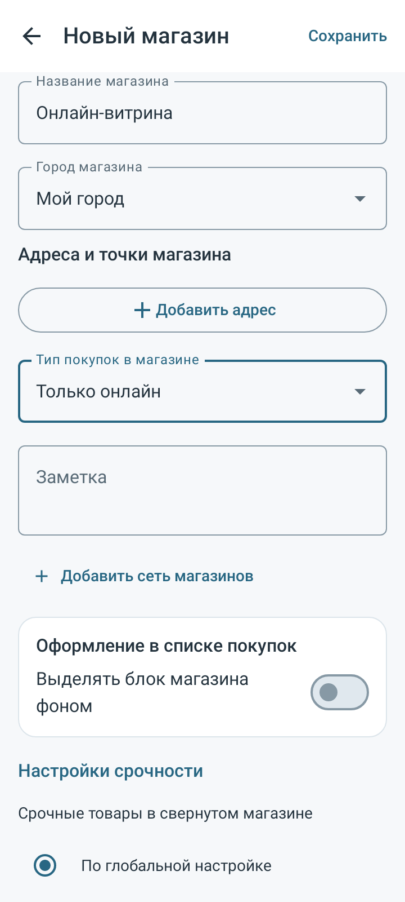
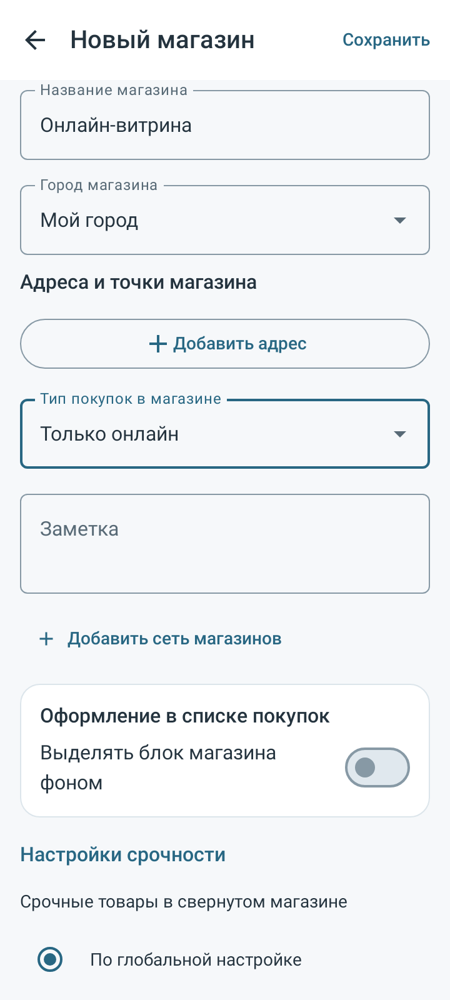
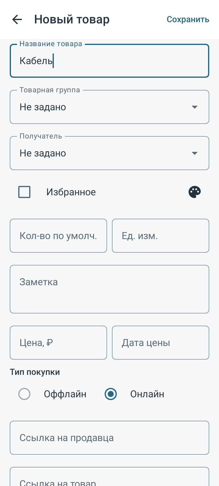
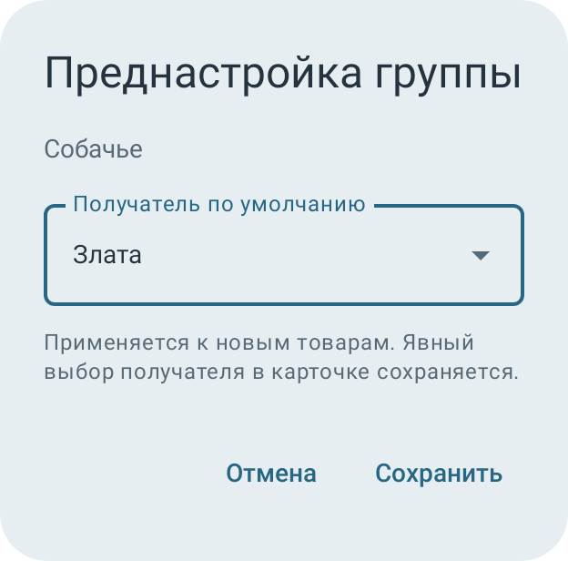
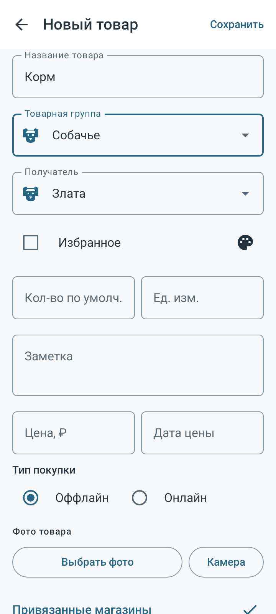
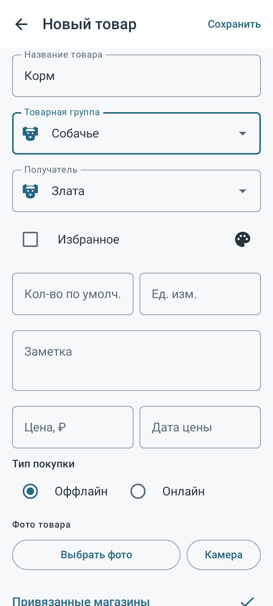
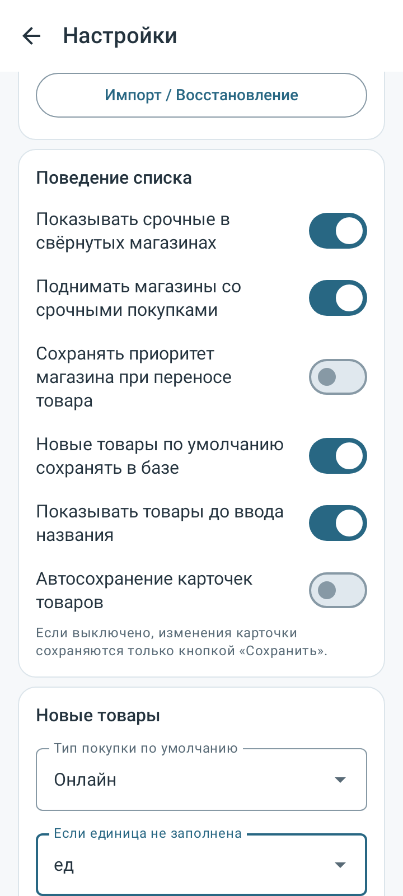
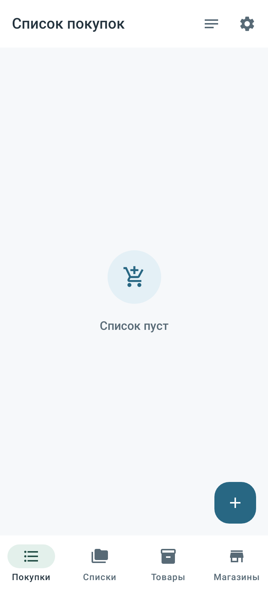
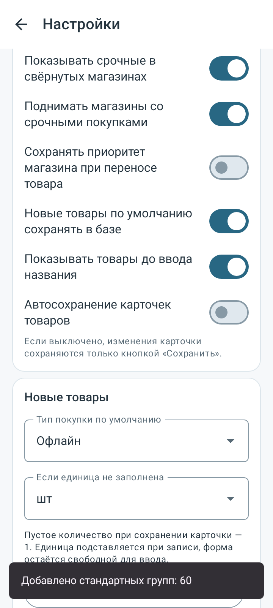
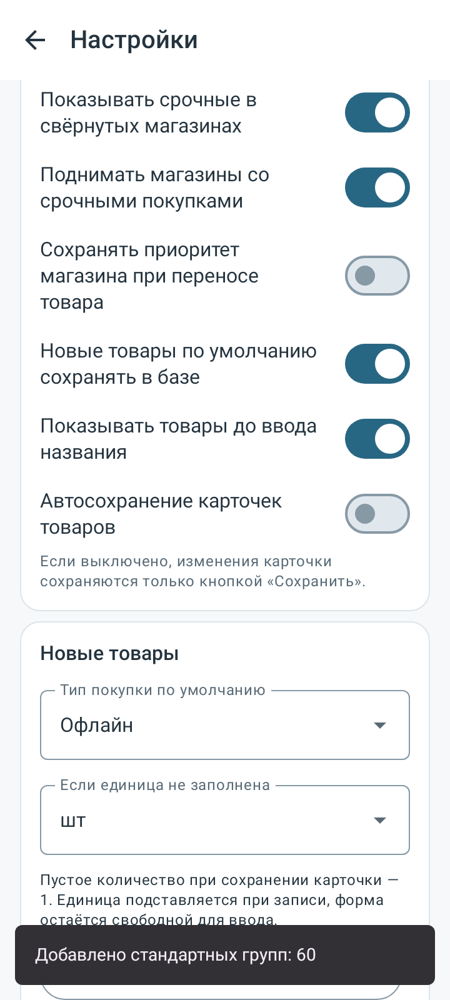
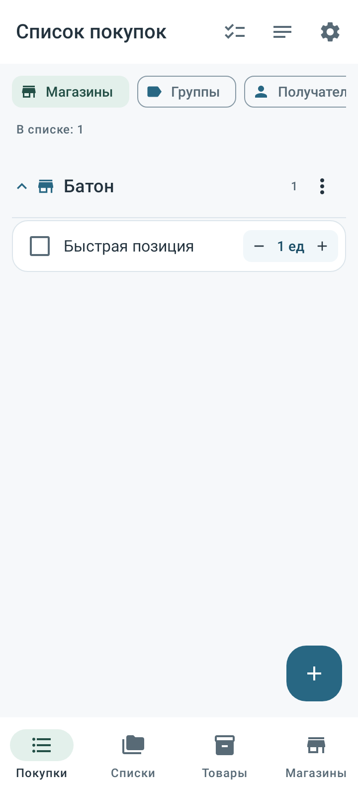